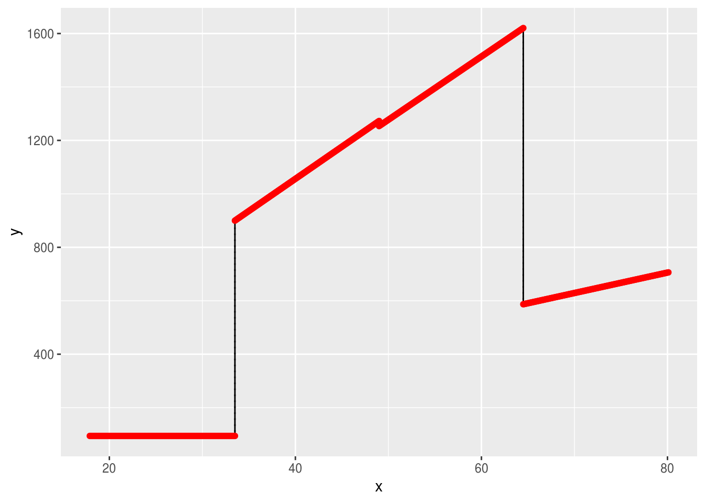
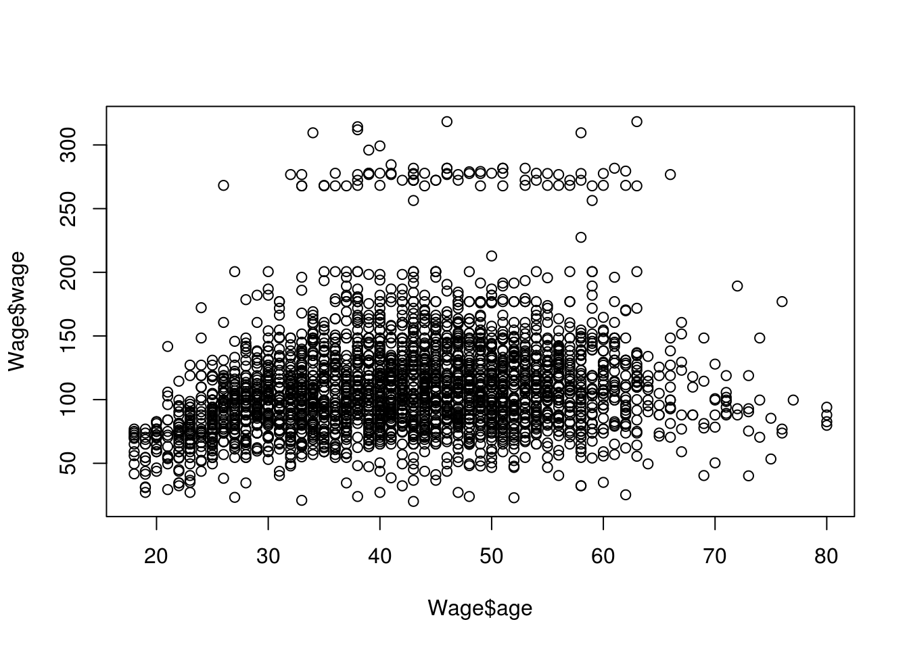
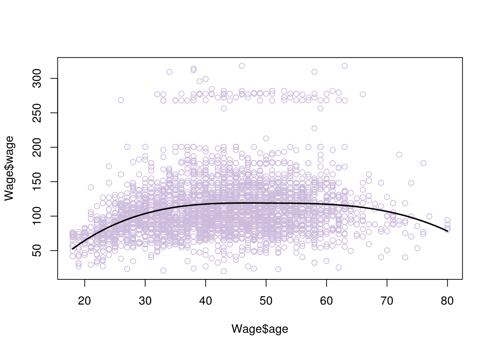
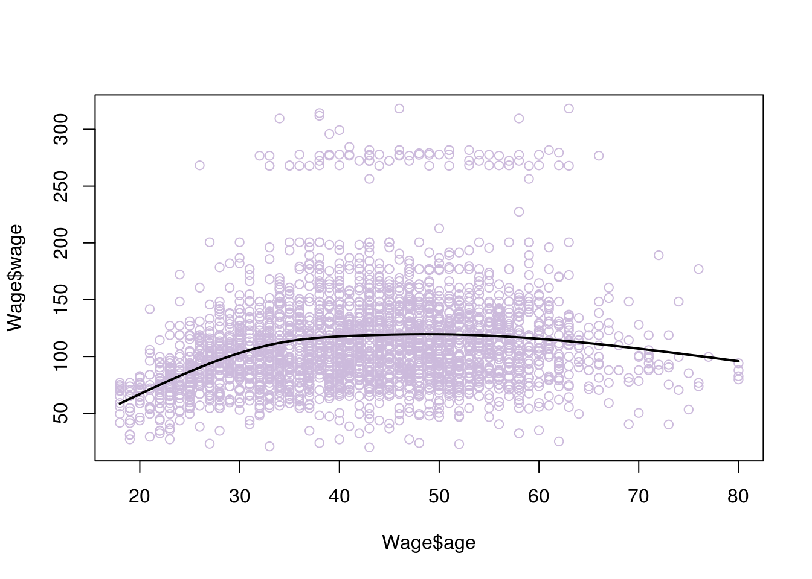
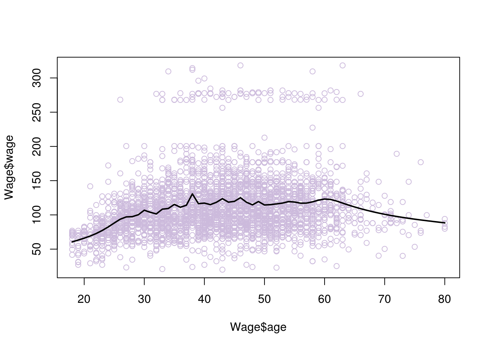
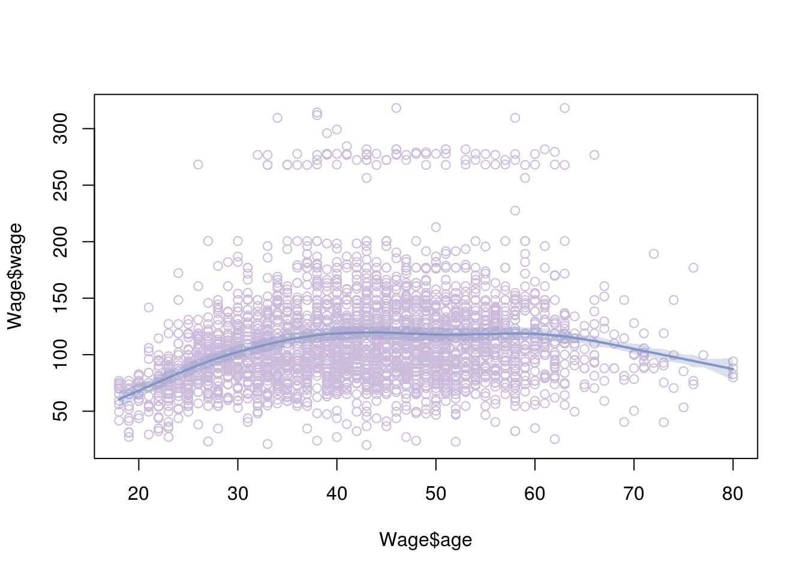
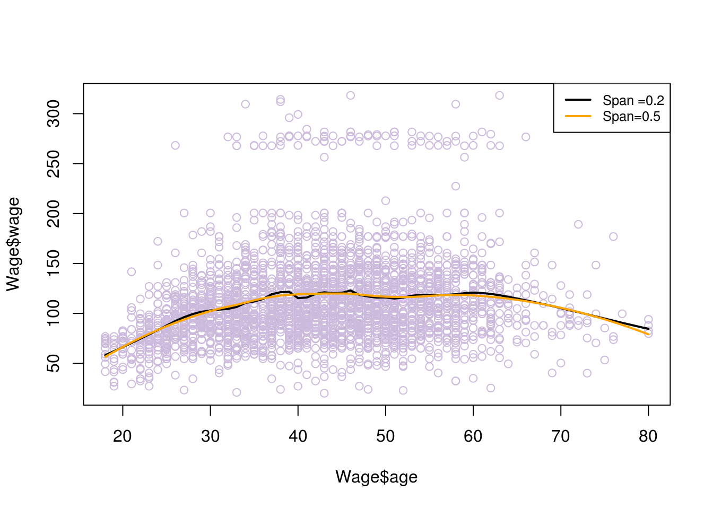
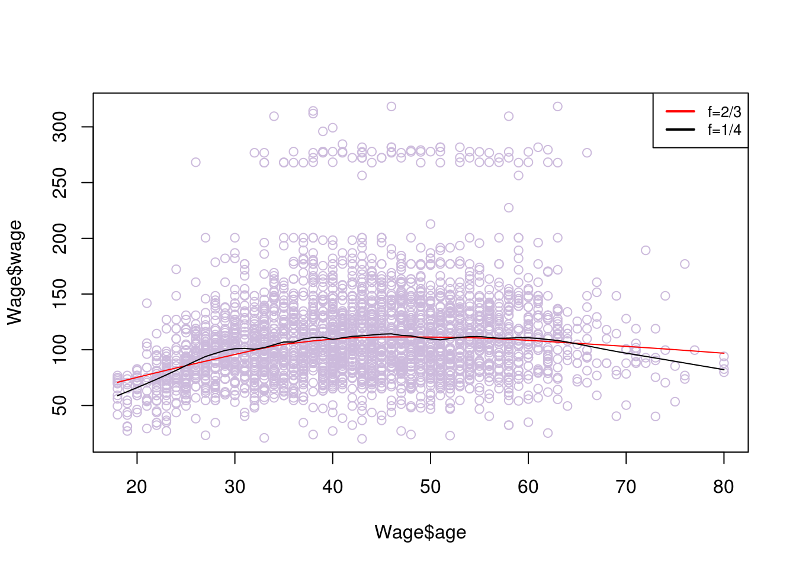

6 Extensions for linear models
6.1 Introduction
As we have already mentioned, the linear model suffers some serious limitations, which steam from the assumption that the model follows a linear trend. In real life, relations between predictors and reaction are (almost always) more complicated. They can be changing as the predictors take on higher/lower values. When we explained linear regression we also show polynomial regression, which was able to better explain some of those alternations and optimise our models’ performance. In this chapter we will look into other such extensions of the linear models. As a general idea, we will be attempting to capture variations on this relationship, by splitting the data on different ranges of the predictors (where the variation occurs), and fitting a different model on each.
Following that though, Additive models are useful when:
On the scatterplot we observe that the way the predictor is related to the reaction changes for deferent ranges of the predictor. If you spot various ‘curving’ patterns.
In such cases, algorithms such us decision tree based may result in similar or better performance models, with less of the complexity. You may want to use an Additive model, if inference is key in your analysis or as a comparison point in your benchmarking. As always, this will highly depend on your problem, the data you have and your resources. It is advised to try out various models and cross validate them.
6.2 Step Function
This method suggests breaking down the model into bins. Each bin will have its own coefficients that are only valid for a certain range of the predictors \(X\). Each bin is assigned a constant \(C_1\), \(C_2\), \(C_3\), \(C_k\) which can either be 1 or 0, indicating if the value that \(X\) takes, is inside or outside the bin’s range. Doing so allows us to represent the function as follows and solve using least squares.
$ y_j = _0 + _1 C_1 x_1 + _2 C_2 x_1 + … + _k C_k x_1 + _1 C_1 x_2 + _2 C_2 x_2 + … + _k C_k x_2 + … + _1 C_1 x_j + _2 C_2 x_j + … + _k C_k x_j$
where for each \(x_j\) you can have up to one \(C_k=1\) (one or none \(C_k\) will be true), since it can only have up to one coefficient depending on which bin it belongs to.
This method comes with a major disadvantage. Since each bin’s coefficients are derived using only data that is within the bin’s range, we might miss capturing global trends.
Generally, you would consider using this method if:
The bins you want to split your data into are well defined by nature. For example, this method is popular in disciplines such us biostatistics and epidemiology, where the relationships studied are very different for patients with 5-year differences (bins would split the data for every age group).
You have a lot of coefficients out of which some are useful for certain ranges and others are useful for other ranges
# we will use the dataset Wage, made by ISLR to fit well for additive models
library(ISLR)
data(Wage)
# the cut() function will help us split the data in bins. We can select how many bins we want, here we have selected 4. Furthermore, we can set the cut off points, which would be used to place each bin with the option breaks=,. If this is not specified R will choose to place each bin uniformly across the range of x. In this case R has set a bin for every 15.5 year group.
t <-table(cut(Wage$age,4))
t##
## (17.9,33.5] (33.5,49] (49,64.5] (64.5,80.1]
## 750 1399 779 72model <- lm(wage~cut(age,4), data = Wage)
# here you can see that each age group has its own coefficient estimate.
# notice that the age group 17.9 to 33.5 does not have a coefficient. For those values prediction would simply be their avarage wage given by the intercept $94.158.
model##
## Call:
## lm(formula = wage ~ cut(age, 4), data = Wage)
##
## Coefficients:
## (Intercept) cut(age, 4)(33.5,49] cut(age, 4)(49,64.5]
## 94.158 24.053 23.665
## cut(age, 4)(64.5,80.1]
## 7.641# let's see how this looks like
library(ggplot2)
x1 <- seq(17.9, 33.5, 0.1)
y1 <- rep(94.158, times = length(x1) )
y2 <- integer()
x2 <- seq(33.5, 49, 0.1)
for(i in 1:length(x2)){
y2[i] <- 94.158 + 24.053 * x2[i]
}
y3 <- integer()
x3 <- seq(49, 64.5, 0.1)
for(i in 1:length(x3)){
y3[i] <- 94.158 + 23.665 * x3[i]
}
y4 <- integer()
x4 <- seq(64.5, 80.1, 0.1)
for(i in 1:length(x4)){
y4[i] <- 94.158 + 7.641* x4[i]
}
x <- c(x1,x2, x3, x4)
y <- c(y1,y2, y3, y4)
d=data.frame(x=x, y=y)
ggplot() +
geom_step(data=d, mapping=aes(x=x, y=y)) +
geom_step(data=d, mapping=aes(x=x, y=y), direction="vh", linetype=3) +
geom_point(data=d, mapping=aes(x=x, y=y), color="red")
6.3 Splines
As we can see from the graph, the endpoints are not fitting well, the model is not ‘smooth’. And although it is clearly not as strict and overgeneralised as a simple linear model, it may not do a great job of describing the relationship between age and wage. If we look at the scatterplot, we can see that a curve rather than a line could be more fitting.
plot(Wage$age, Wage$wage)
We already know that we can use a polynomial in order to fit a curve to the data. We could try various degrees of polynomials and cross validate them to see which performed the best. Polynomials however, have various pitfalls. They usually perform well on quite high degrees. High degrees of polynomials will curve the data too much in unnecessary places and can cause inaccurate analysis, among other issues. Instead we would like to use piecewise polynomial regression, where we would choose a polynomial of smaller degree but achieve optimal performance. In piecewise polynomial regression we fit a model using deferent coefficients for various ranges of \(x\). Quite often the cubic (3rd degree polynomial) performs well, here is what a function for cubic piecewise polynomial regression would look like:
\(y_i = \left\{ \begin{array}{ll} \beta_01 + \beta_11x_j + \beta_21x_j^2 + \beta_31x_j^3 & \mbox{if } x_j \geq c \\ \beta_02 + \beta_12x_j + \beta_22x_j^2 + \beta_32x_j^3 & \mbox{if } x_j < c \end{array} \right.\)
Where the range of \(x\) is been ‘cut’ on the point \(c\). The point \(c\) is called a knot. We can add more knots if we want to increase the flexibility of the model.
We say that the above function has been split in two bias functions one for \(x_j \geq c\) and one for \(x_j < c\).
When we apply such a regression, we have managed to overcome some of the pitfalls of polynomial regression. However, the model would be discontinuous at the points of the knots, here is an example where we chosen a single knot at age 50.
#split the data at knot=50
data1 <- Wage[which(Wage$age <= 50),]
data2 <- Wage[which(Wage$age>50),]
#create the two bias functions
fit1 <- lm(wage ~ age + I(age^2) + I(age^3), data = data1)
fit2 <- lm(wage ~ age + I(age^2) + I(age^3), data = data2)
# x values for each bias function
age.grid1 <- seq(from=18,to=50)
age.grid2 <- seq(from=50,to=80)
#y values resulting from each bias function
y1 <- predict(fit1,list(age=age.grid1))
y2 <- predict(fit2,list(age=age.grid2))
#plots
plot(Wage$wage ~ Wage$age, data = Wage,col="#CCBADC")
with(data.frame(age.grid1), lines(x = age.grid1, y = y1))
with(data.frame(age.grid2), lines(x = age.grid2, y = y2))We now need to ‘smoothen’ the graph. In other words, we want we want the rate of change for its slope (which describes its shape) to be the same at the point of the knots, so as to avoid weird ‘bumps’. This is given by the second derivative. So we can add the condition that the second derivatives of the left and right functions need to be the same, at the point of the knot (50 in this example). Adding this constraint will create what is called a natural spline. There are other ways to smoothen the graph such us a clamp, where instead we require the first derivatives to be equal to zero.
Here is what happens when we add this condition
#library for fitting cubic splines
library(splines)
model <- lm(wage~bs(age,knots=c(50)), data=Wage)
# x values
agelims <- range(Wage$age)
age.grid <- seq(from=agelims[1],to=agelims[2])
# resulting y values
pred<- predict(model,list(age=age.grid),se=T)
#plot
plot(Wage$age, Wage$wage, col="#CCBADC")
lines(age.grid, pred$fit, lwd=2)
# if you are not sure how many knots to place and where, you can instead choose your degrees of freedom, the knots are placed uniformly by R:
model <- lm(wage~ns(age, df=4), data=Wage)
pred <- predict(model, newdata = list(age=age.grid), se=T)
plot(Wage$age, Wage$wage, col="#CCBADC")
lines(age.grid, pred$fit, lwd=2)
# if we increase the degrees of freedom we allow for more 'wiggle' room and risk overfitting
model <- lm(wage~ns(age, df=30), data=Wage)
pred <- predict(model, newdata = list(age=age.grid), se=T)
plot(Wage$age, Wage$wage, col="#CCBADC")
lines(age.grid, pred$fit, lwd=2)
6.4 Smoothing splines
Smoothing splines is another way we can fit a curve to our data. Just like we did when fitting a line to the data, we will try to fit a curve that minimises the residual error ( a curve that is the closest to all points). Of course with a curve, we can always fit all the data perfectly, using potentially a very ‘wiggly’ curve that goes around all the points. Such a curve will have extreme problems of overfitting. Instead, what we really want to do is find a curve that fits the data well but also minimises overfitting.
We can achieve this in a similar manner to ridge regression, adding a penalty of weight \(\lambda\) to the function that minimises RSS. This penalty will be associated with how ‘wiggly’ the line is, since we are trying to find the best fitting ‘smooth’ curve. We have explain that smoothness of the curve can be associated with the second derivative of the curve’s function. This brings us to the function we will be minimising (don’t worry too much about the representation):
\(\sum_{n=1}^{n} (y_i - g(x_i)^2) + \lambda \int g''(t)^2\,dt.\)
As you would expect, \(\lambda\) is found using cross validation.
# smooth splines using cross validation
model <- smooth.spline(Wage$age, Wage$wage, cv= TRUE)## Warning in smooth.spline(Wage$age, Wage$wage, cv = TRUE): cross-validation
## with non-unique 'x' values seems doubtfulplot(Wage$age, Wage$wage, col="#CCBADC")
lines(model,lwd=2)
6.5 Local Regression
If all fails, there is the alternative of fitting a curve to your data using the local regression. This method creates the curve incrementally. It chooses its place at some point \(x\), by considering the location of the closets observations around that place. It resembles the algorithm k-nearest-neighbours (discussed in future chapters).
Let’s see exactly how this is achieved:
First we need to define the size of the window. That is how many closest observations we want the method to account for, when defining each new point of the curve. We will call this number \(k\)
Then we want to define the new points of the curve. We do that by moving the original observation’s location to a new location. We start from the first observation and we find the k-closest observations to it.
To find its new position we perform least squares on the k-closest points (including the original point). The original point is referred to us the vocal point. The closest those k points are, the more weight is given to them on the regression. They have more influence on the position of the best fit line. The vocal point has the most weight.
We project the vocal point on the best fit line. The projection is the fist point of the curve we are trying to draw
We repeat steps 2,3 and 4 for all the observations, in order to find all the points of our curve.
We could now draw a ‘best fit curve’ by connecting all those new points. However, that curve may have a lot of ‘wiggle’, so we want to follow some additional steps in order to smoothen it.
The ‘wiggles’ would be the result of points that are too hight/low compared to the average, and are influencing the position of the best fit line each time too much (remember leverage points). TO reduce their effect, we add additional weights based on how far the original points are to the projected ones. Points that are moved too much will have higher weights.
We repeat the process of finding new points from the original observations using least squares. However, this time we also account for the additional new weights.
Now we can fit a smoother curve in our data, by connecting the new points
Notes:
The process of regularisation (smoothening) may need to be repeated a couple of times in order to reach the desired level of smoothness.
We may want to fit parabolas instead of lines on each window of data. Parabolas tend to work better on data that indicates a lot of curving patterns. In R you can use the function lowess() for a line and loess() for a parabola (or a line, it defaults to parabola)
In theory we can perform Local Regression for multiple \(x\) predictors. However, when the dimensions are increasing the observations will become more sparse amongst them. This means that there would be greater distances between them and not enough nearby observations for each dimension. You need to ensure you have enough observations. In general local regression is performed with 3 or 4 predictors as a max.
watch https://www.youtube.com/watch?v=Vf7oJ6z2LCc for a good visual explanation by Josh Starmer.
# fitting parabolas
# spam associates with degree of smoothing and is related to the window size selected proportional to the data
fit1 = loess(wage~age,span=.2,data=Wage)
fit2 = loess(wage~age,span=.5,data=Wage)
plot(Wage$age, Wage$wage, col="#CCBADC")
lines(age.grid,predict(fit1,data.frame(age=age.grid)),lwd=2)
lines(age.grid,predict(fit2,data.frame(age=age.grid)),lwd=2, col = "orange")
legend("topright", legend=c("Span =0.2", "Span=0.5"), col=c("black","orange"), lty=1, lwd=2, cex=.8)
# fitting lines
# f is similar to span, the greater f gives more smoothness
plot(Wage$age, Wage$wage, col="#CCBADC")
lines(lowess(Wage$age, Wage$wage, f=2/3), col=2)
lines(lowess(Wage$age, Wage$wage,f=1/8))
legend("topright", legend=c("f=2/3", "f=1/4"), col=c("red","black"), lty=1, lwd=2, cex=.8)